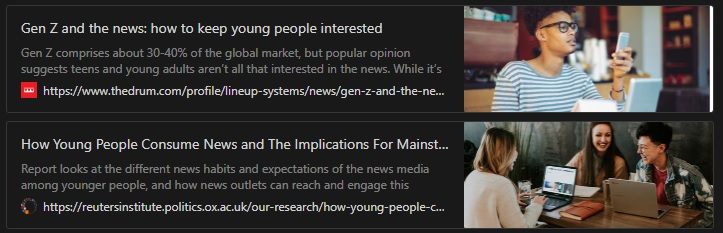
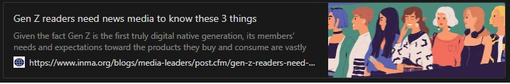
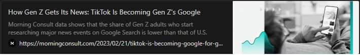
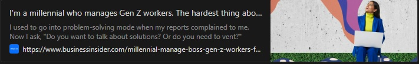

+8-=-=-=-=-=-8+ | ,.-'"'-., | |/ \| |\:. .:/| | \:::::::/ | | \:::::/ | | \:::/ | | ):( | | / . \ | | / . \ | | / . \ | |/ .:. \| |\.:::::::./| | '--___--' | +8-=-=-=-=-=-8+
Research
Gen Z primarily consumes news via social media and online sources that are tailored to their interests. They prefer content that is highly visual, shareable, and relatable to their daily experiences.
“Young people are primarily driven by progress and enjoyment in their lives, and this translates into what they look for in news.”
This shows that younger people mainly focus on what they want their lives to be instead for worrying about something on traditional news that might not have a big impact on their lives.
"much of the excitement and gravitas for younger people is on the periphery of the news space (infotainment, lifestyle, cultural, grassroots, bloggers and vloggers).”
Younger generations don’t actually look out for “news” but instead they tend to look at things more inline with how their current lifestyle is, or what they want their lifestyle to be. This leads back to the younger generations to seek out the news that would progress and improve their lives while also fulfilling their social and personal needs.
"In a simplified way, how news brands and young people view the role and value of news is different”
People who are not part of the current generation view news completely different then how Gen Z sees news. For example People who are older tend to see the news as whats going on the in the world. Where-as Gen Z consumes news if it interests them, weather its fun and engaging instead of what news is traditionally is meant to be for.
"One could argue young people aren’t political or interested in what’s going on around them. (On the other hand, people regularly complain about how many social justice causes Gen Z is invested in and how one “can’t even speak anymore without being cancelled online.” But that’s a different topic entirely.)”
considering that Gen Zs d have an active hand in social justices causes and are mostly heavily invested in them, you could argue that its more about being apart of the news instead of witnessing is on the side. But on the other hand, most social justice causes are based on blind beliefs instead of it being based in fact, but but feeling.
Its as if Gen Z is prone to activism but only to the extent of it being online.
it does sometimes feel like that Gen Z are always online being apart of the native technology user era and only looking at what current, entertaining, and or sometimes blind belief with no logical base.
“Our parents and grandparents had a dedicated newspaper time slot allocated”
“Younger generations, however, prefer snacking on their news, reading a little something whenever it happens or is convenient”
“Having a huge, unorganised wall of information definitely does not invite people to spend money on a product.”
Information overload is a major aspect of serving information to Gen Z. They dont have the time to digested and summarize the wall of text thats given to them cause they would only look at something for a short amount of time due to the short attention span that Gen Z have. So making quick easy to digest information is one of the keys to getting Gen Z to consume what you want them to.
“Especially since the Trump era, the need for credible, unbiased, and fact-based reporting has grown more than ever. A big contributor to this is a diversity of opinions and a focus on unbiased reporting (in other words, the opposite of American breakfast TV).”
The glaring issue with main stream media is that its rooted in politics and they want to push an agenda on to its consumers without considering other facts and view points.
“Google acknowledged it was becoming a less-favored search platform for Gen Zers.”
"A similarly high percentage of Gen Z adults (13%) said they start researching major news events on YouTube. But news on YouTube doesn’t skew toward Gen Zers as heavily as news on TikTok does: 9% of adults start researching news events on the former, compared with just 2% for the latter. This speaks to how TikTok can help news brands make inroads with Gen Zers faster than other social platforms can.”
As social media emerged and taking over the world by storm and being adopted by younger generations as a source of entertainment, it has had a major impact on how people now consume content. With the easy access to social media younger people are less inclined to actually do out to seek news but instead just opening their social media and finding out what’s happening through that.
“It also shows why publishers including The New York Times and The Wall Street Journal have launched TikTok accounts within the past six months.” ”though many still aren’t very active.”
Traditional media does make an effort into trying to be on social media platforms but lacks the consistency in news updates on said platforms. However there are also other factors to consider, such as if the social media account is performing well in engaging their target audience.
TikTok is becoming a major source of information and education for Generation Z, similar to how Google is for other age groups. TikTok's algorithm allows users to discover and learn new things through short-form videos, with topics ranging from politics to beauty and everything in between. As a result, many Gen Zers are turning to TikTok as a primary source of information and are finding it more accessible and engaging than traditional media. The article also highlights how this trend is affecting industries such as journalism and advertising, as they adapt to the changing ways in which younger generations consume content.
References:
- Lineup Systems. (2019, August 20). Gen Z and the news: how to keep young people interested. The Drum. https://www.thedrum.com/profile/lineup-systems/news/gen-z-and-the-news-how-to-keep-young-people-interested
- Newman, N., Fletcher, R., Kalogeropoulos, A., & Nielsen, R. K. (2019). How Young People Consume News and The Implications For Mainstream Media. Reuters Institute for the Study of Journalism. https://reutersinstitute.politics.ox.ac.uk/our-research/how-young-people-consume-news-and-implications-mainstream-media
- Diederichs, N. (2019, January 31). Gen Z readers need news media to know these 3 things. INMA. https://www.inma.org/blogs/media-leaders/post.cfm/gen-z-readers-need-news-media-to-know-these-3-things
- Morris, J. (2023, February 21). How Gen Z Gets Its News: TikTok Is Becoming Gen Z's Google. Morning Consult. https://morningconsult.com/2023/02/21/tiktok-is-becoming-google-for-gen-z/
- Bortolot, L. (2023, February 15). I'm a millennial who manages Gen Z workers. The hardest thing about it is dealing with all their 'feelings about work.' Business Insider. https://www.businessinsider.com/millennial-manage-boss-gen-z-workers-feelings-work-employees2023-2
Ideation
Fake News News
Tagline: GET IT TWISTED
- News website that reports on the current news but with a major twist. The news would be super skewed in a way that doesn’t lean into politics, rather skewed in feelings. Presented in a story like format with short articles + video
TF'S GOING ON
Tagline: What’s the deal with this?
- Podcast where influencers talk about what news that they have seen/heard podcasts are created every week with influencers talking about whats happening in the country/world. Articles will also be made about the news with podcast attached mainly presented in podcast for with optional article for readers
Dice News
Tagline: Talk about the new with your friends
- A platform that generates random news topics for you and your friends to talk about. A random topic is grabbed based off of the current news and put into a pool that a random number generator rolls to see what topic you can get. Presented as a random dice roll on the current trending news
Fortune
Tagline: See what your news fortune is today
- A website where you get given and a random fortune cookie and the fortune inside the cookies is the news
These ideas are not 100% final so changes will apply in the final idea